前记
单点登录（Single Sign On）严格上来说和 OAuth2 没太大关系，只是 SSO 可以通过 OAuth2 实现。本文延续 OAuth2 初识的模式，看完原理写 Demo，在上一个 Demo 的基础上加以改造。
认证中心仍然是 QQ，然后子系统是 QQ 邮箱 + QQ 游戏，两个子系统除了配置上有少许差别外，基本一样。
代码：GitHub
原理参考单点登录原理，内容上有删改。
前提知识：
- session 和 cookie 的使用
单系统登录
假设浏览器第一次请求服务器需要输入用户名与密码验证身份，服务器拿到用户名密码去数据库比对，正确的话说明当前持有这个会话的用户是合法用户，应该将这个会话标记为“已授权”或者“已登录”等等之类的状态，既然是会话的状态，自然要保存在会话对象中，tomcat 在会话对象中设置登录状态：
1 | HttpSession session = request.getSession(); |
用户再次访问时，tomcat 在会话对象中查看登录状态：
1 | HttpSession session = request.getSession(); |
实现了登录状态的浏览器请求服务器模型：
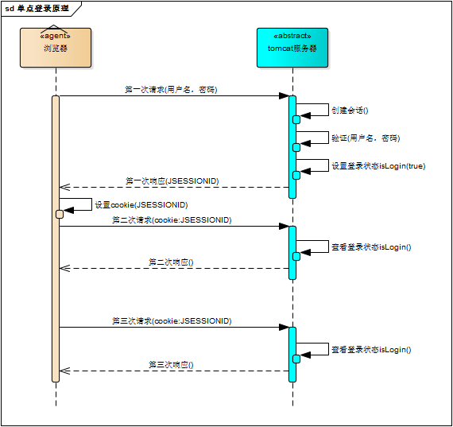
每次请求受保护资源时都会检查会话对象中的登录状态，只有 isLogin=true 的会话才能访问，登录机制因此而实现。
多系统的复杂性
Web 系统早已从久远的单系统发展成为如今由多系统组成的应用群，面对如此众多的系统，用户难道要一个一个登录、然后一个一个注销吗？
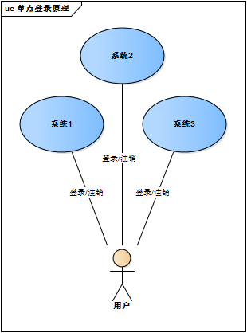
Web 系统由单系统发展成多系统组成的应用群，复杂性应该由系统内部承担，而不是用户。无论 Web 系统内部多么复杂，对用户而言，都是一个统一的整体，也就是说，用户访问 Web 系统的整个应用群与访问单个系统一样，登录/注销只要一次就够了：
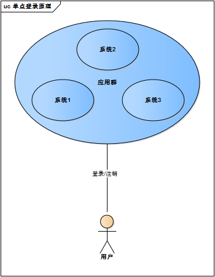
虽然单系统的登录解决方案很完美，但对于多系统应用群并不适用。
单系统登录解决方案的核心是 cookie，cookie 携带会话 id 在浏览器与服务器之间维护会话状态。但 cookie 的作用域是有限制的，通常对应网站的域名，浏览器发送 HTTP 请求时会自动携带与该域匹配的 cookie，而不是所有 cookie。
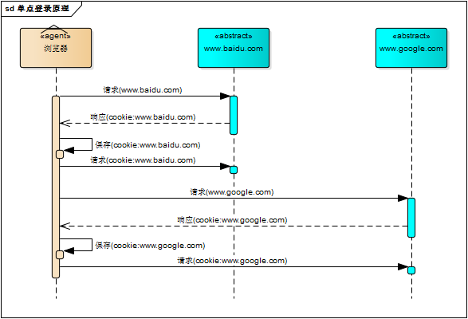
早期的多系统登录就采用同域名的方式共享 cookie。比如 *.baidu.com，然后将它们的 cookie 域设置为 baidu.com，统一在一个顶级域名下，这样 baidu 子域名下的所有子系统都可以共享 cookie 了。
缺点：
- 应用群域名统一；
- 应用间使用的 cookie 的 key 值要一致（比如 tomcat 默认是 JSESSIONID），不然无法获取 cookie 并维持会话；
- 共享 cookie 的方式无法实现跨语言技术平台登录，比如在 Java、PHP、.NET 系统之间；
- cookie 本身不安全。
单点登录
单点登录：用户只要在多系统应用群中登录其中某一个系统，便可在其他所有系统中得到授权而无需再次登录。
登录
相比单系统登录，SSO 需要一个独立的认证中心，只有认证中心能接受用户的用户名密码等安全信息，其他系统不提供登录入口，只接受认证中心的间接授权。
间接授权通过令牌实现，SSO 认证中心验证用户名密码，创建授权令牌，在接下来的跳转过程中，授权令牌作为参数发送给各个子系统，子系统拿到令牌，即得到了授权，可以借此创建局部会话，局部会话登录方式与单系统的登录方式相同。
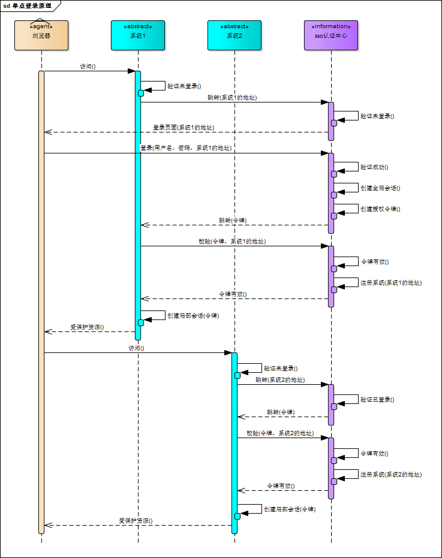
用户登录成功之后，与 SSO 认证中心及各个子系统建立会话。
- 与 SSO 认证中心建立的会话称为全局会话；
- 与各个子系统建立的会话称为局部会话，局部会话建立之后，用户访问子系统受保护资源将不再通过 SSO 认证中心。
全局会话与局部会话有如下约束关系：
- 局部会话存在，全局会话一定存在；
- 全局会话存在，局部会话不一定存在；
- 全局会话销毁，局部会话必须销毁。
注销
单点登录自然也要单点注销，在一个子系统中注销，所有子系统的会话都将被销毁。
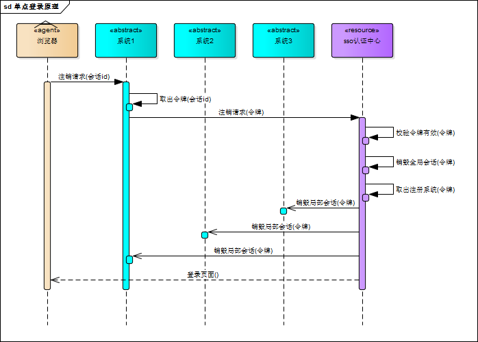
SSO 认证中心一直监听全局会话的状态，一旦全局会话销毁，监听器将通知所有注册系统执行注销操作
- 用户向系统1发起注销请求.
- 系统1根据用户与系统1建立的会话id拿到令牌，向 SSO 认证中心发起注销请求。
- SSO 认证中心校验令牌有效，销毁全局会话，同时取出所有用此令牌注册的系统地址。
- SSO 认证中心向所有注册系统发起注销请求。
- 各注册系统接收 SSO 认证中心的注销请求，销毁局部会话。
- SSO 认证中心引导用户至登录页面。
部署图
单点登录涉及 SSO 认证中心 server 与众子系统 clients，子系统与 SSO 认证中心之间进行通信以交换令牌、校验令牌和发起注销请求，因而子系统必须集成 SSO 的客户端，SSO 认证中心则是 SSO 服务端，整个单点登录过程实质是 SSO 客户端与服务端通信的过程：
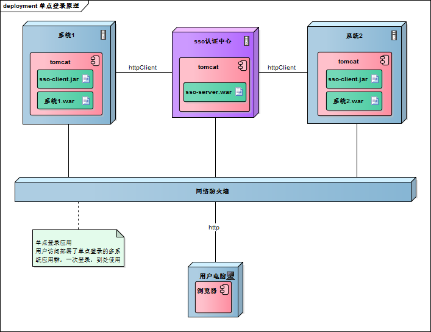
SSO 认证中心与 SSO 客户端通信方式有多种，比如：Web Service、RPC、RESTFul API。
实现
SSO-Client
- servlet、filter 或 listener 拦截子系统 未登录用户 请求，重定向至 SSO 认证中心 server（附带客户端地址、clientId、clientSecret，类似授权码认证）；
- 接收并存储 server 发送的令牌；
- 请求 server 校验令牌的有效性，若无效则和未登录一样重定向到 server；
- 建立局部会话；
- 拦截用户注销请求，向 server 发送注销请求；
- 接收 server 发出的注销请求，销毁局部会话。
SSO-Server
- 验证客户端信息，无效则回到客户端；
- 验证用户的登录信息；
- 创建全局会话；
- 创建授权令牌；
- 重定向回 SSO 客户端 client，并附上令牌；
- 校验 client 令牌有效性（存在、有效），若有效则将客户端注册到 server（暂存）；
- 接收 client 注销请求，注销所有会话。
Demo
首先是访问 QQ 邮箱，因为没有登录过，所以重定向到了认证服务器：
1 |
|
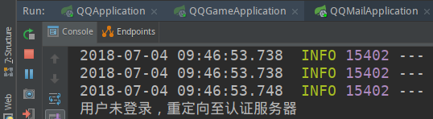
认证服务器向用户提供登录界面：
1 | ("/login") |
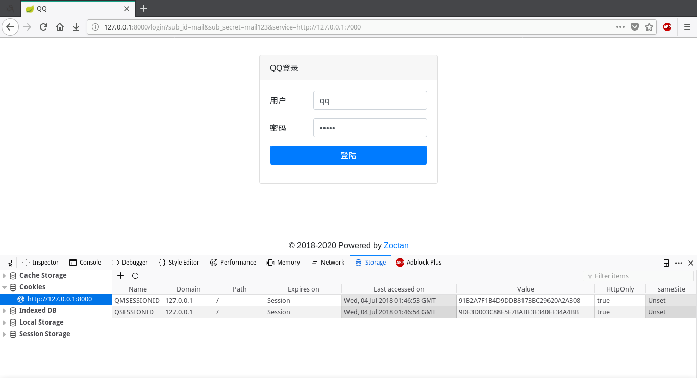
用户登录成功，重定向回 QQ 邮箱子系统：
1 | ("/doLogin") |
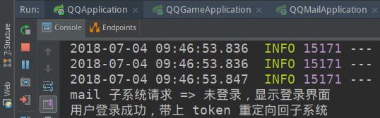
子系统接受回调内容：
1 | ("/") |
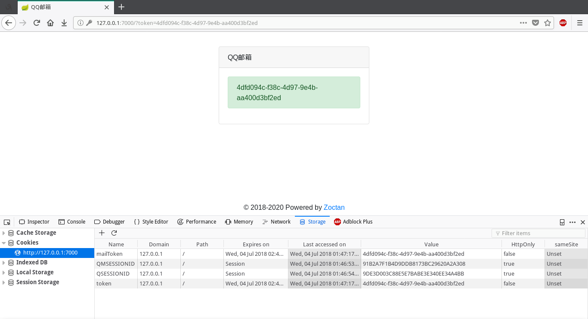
然后尝试访问 QQ 游戏子系统，可以看到直接就带上了 token，表明用户已经登录：
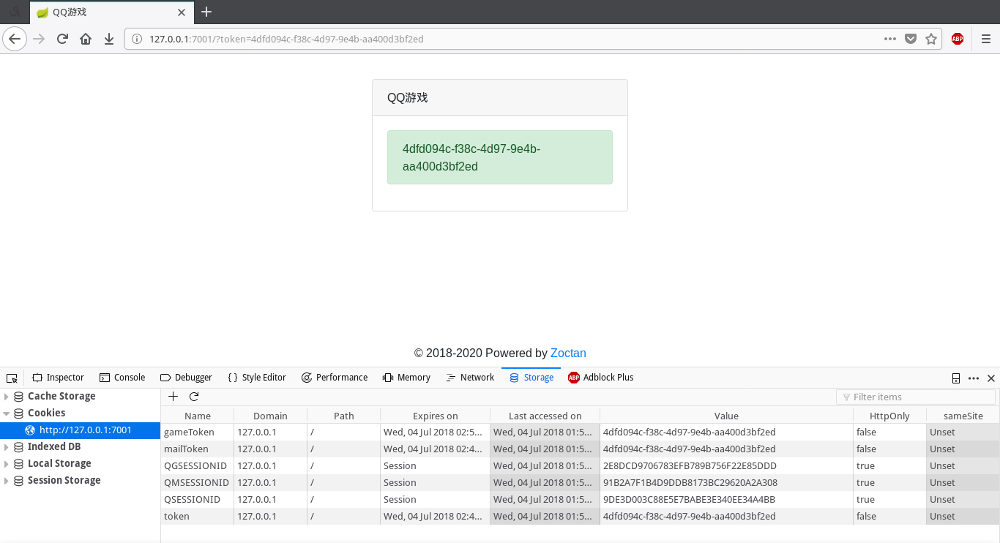
认证服务器的控制台也显示了，在 QQ 游戏不知道用户是否登录时，重定向到了认证服务器，因为全局 session 设置了 isLogin=true，所以认证服务器直接把 token 带上，重定向回 QQ 游戏，避免了用户二次登录。
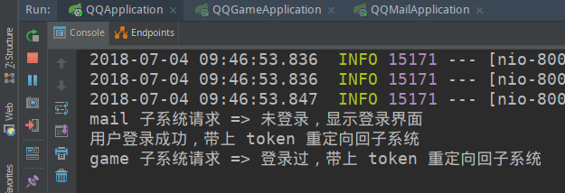
总结
通过原理和 demo 可以看出，其实单点登录也是利用了 cookie、session，只是进一步分为了全局的，和局部的，分别对应认证服务器和各个子系统。
当子系统不能确认用户登录时，重定向到认证服务器确认：
- 如果未登录，全局 session 为空或者 isLogin=false，认证服务器提供登录界面，登陆成功就设置认证服务器和浏览器之间的全局 session 中 isLogin=true。
- 如果登录过，带上 token，重定向回子系统，避免用户重复登录。